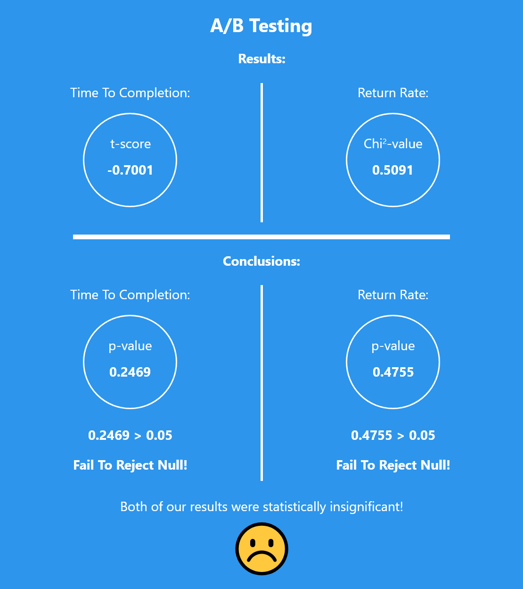

Visual design is a polarizing subject and is often very subject to personal opinion. However, there are times when we need to determine which version of a design we wish to implement. Rather then rely on our personal opinions, which often may be biased, we can use A/B testing and statistical analysis to try to determine if one design is better than another.
For this project, we created 2 distinct designs for a web store. Users were tasked with adding 150 dollars worth of plants to the cart. After collecting our data, we plan on using statistics to analyze our results and hopefully reach interesting conclusions.
The first step of our statistical analysis is to come up with our Hypotheses. For this project, we are interested in two specific metrics: time to completion and return rate. For each metric, we want to create a set of Hypotheses, a null hypothesis and an alternative hypothesis for each.
A null hypothesis takes the position that there is no difference between versions A and B of our website. An alternative hypothesis states that there is a difference. It might seem a bit odd that by default, we assume that there is no difference (since this is the null hypothesis). The reasoning for this has to do with statistics, and is a bit beyond the scope of the write-up, so I'm including a link here with contains more information.
Null: There is no significant difference in time to completion between Site A and Site B.
Alternative: Time to completion will be shorter for Site B because the grid layout makes finding different items easier and therefore should reduce the time needed to complete the task.
Null: There is no significant difference in return rate between Site A and Site B.
Alternative: There is a difference in return rate between Site A and Site B because Site A highlights quantities and prices in red, which should change how often a user needs to check the cart for a total price.
Note that our alternative hypotheses are worded slightly differently because our time to completion test was a 1-sided statistical test while our return rate test was a 2-sided statistical test. Click here to learn more.
The process of data collection can be split into 3 distinct parts. First, the actual collection of data. Next, the cleaning of data. And finally, the processing of our cleaned data.
To collect our data, we added listeners to each sites' buttons. When a button was clicked by a user, a new log line would be generated.
Once we have our raw logs, we need to clean our data. An example of a potential bad log is a user that loaded the site but did not interact with the site. These bad logs should be removed as they can skew our results.
The final step is to analyze our clean data, which we do using our custom Python scripts. We can use the numerical outputs from our Python scripts to reach important conclusions.
Although text is great for communicating ideas, reading can get old fast. Therefore, we chose to display our results in the form of an infographic!
Although I am disappointed that I did not obtain statistically significant results for either of my metrics, I still found that this assignment was a great learning opportunity. I think A/B testing and statistical analysis are very important tools, and I will definitely use them in the future to analyze my designs.